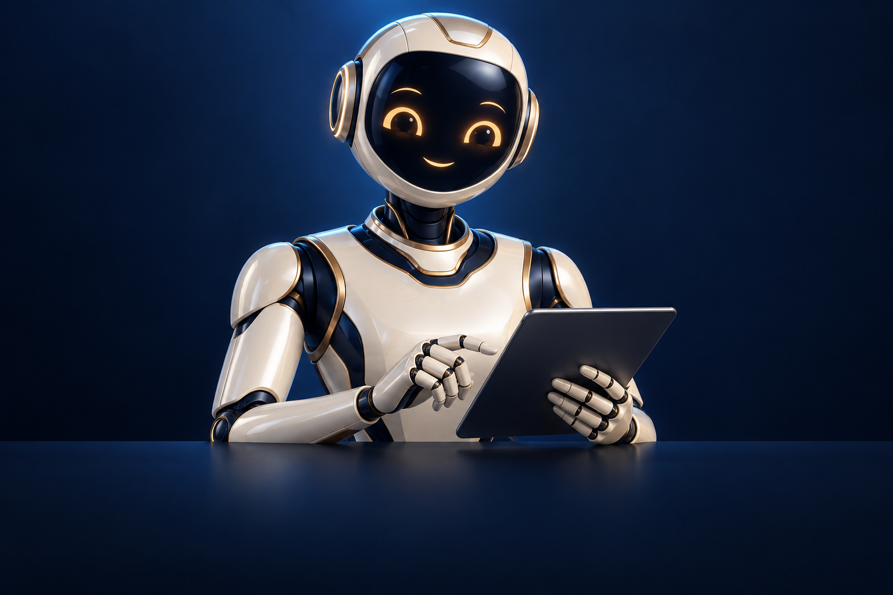

AI 客服
根據 FAQ、產品資料及公司政策整理第一輪回覆，將需要人工判斷的查詢交回團隊。
REAL STUDENT STORY
聽聽學生完成學習與實戰後的真實感想，了解 AI 如何由概念變成每天可以使用的工作能力。
SMARTECH AI / DIGITAL EMPLOYEE
24小時工作｜自動執行｜快速回應｜協助團隊提升效率
當你的團隊還在每天重複處理客戶查詢、整理資料、寫文案、更新 Social Media、跟進潛在客戶時，AI 已經可以協助企業把大量重複性工作自動化。
AI 不是要取代你的團隊，而是讓你的團隊把時間留給更重要的工作。
WHY TRANSFORM NOW
為什麼企業現在需要 AI 轉型？企業面對的問題，很多時候不是「沒有生意」。
客戶晚上查詢，沒有人回覆
WhatsApp、Facebook、IG 訊息分散，很容易漏單
員工每天回答相同問題
Sales 有大量 Leads，卻沒有時間逐一跟進
Social Media 需要不停製作內容
公司資料散落在 Email、文件、WhatsApp 及不同系統
重複行政工作佔用大量時間
想擴大 Business，又擔心增加人手及營運成本
問題不一定是你的員工不夠努力。
很多工作，本來就不需要一直由人手重複完成。
MEET YOUR DIGITAL EMPLOYEE
一位存在於企業數碼系統中的 Digital Employee，根據公司的資料與規則，協助執行指定工作。
與普通 Chatbot 不同，AI 數字員工不只是「回答問題」。
從「回答」，進一步走向 「執行」。
BUILD YOUR AI TEAM
根據 FAQ、產品資料及公司政策整理第一輪回覆，將需要人工判斷的查詢交回團隊。
整理行業資訊、提出選題、生成社交媒體文案與內容排程，讓團隊集中把關品牌方向。
串連腳本、素材、配音、字幕與剪輯；完成設定後，一鍵啟動影片製作工作流。
整理 Leads、分類客戶需求、準備跟進內容與提醒，讓 Sales 更快掌握下一步。
把文件、SOP 與常見問題整理成可查詢的企業知識庫，協助同事快速找到資訊。
協助整理表格、會議摘要、待辦事項與例行報告，把重複行政工作接成流程。
按企業系統與權限配置工作流；重要回覆、發布及決策可保留人工審核。
WHAT CHANGES FOR YOUR BUSINESS
客戶不一定在 Office Hour 找你。AI 可以協助企業提供更持續的第一線回應。
處理重複性、規則清晰的工作，讓員工集中處理判斷、創意及人際溝通。
由等員工有時間回覆，變成更快速的第一輪處理。
同一個團隊可以處理更多 Content、Customer Enquiries 及 Business Tasks。
把 Knowledge、SOP 及 Rules 放進 AI Workflow，減少處理方式不一致。
協助製作不同語言的 Content、Customer Communication 及 Video。
業務增加時，透過流程自動化減輕新增工作量，讓人手配置更有彈性。
BETTER TOGETHER
未來企業的競爭，不只是「誰有更多員工？」
而是「誰懂得讓人類員工 + AI 數字員工一起工作？」
創意 · 策略 · 判斷
關係 · 談判 · 同理心
大量資料 · 重複工作 · 內容初稿
快速處理 · 自動化 · 24/7 執行
Human + AI
YOUR FIRST DIGITAL EMPLOYEE
你不需要一次把整間公司全部 AI 化。先找出公司最耗時間的一個 Workflow。
讓 AI 處理重複工作
讓人專注真正重要的事情
AI 不只是工具。它可以成為你企業新的生產力。